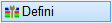
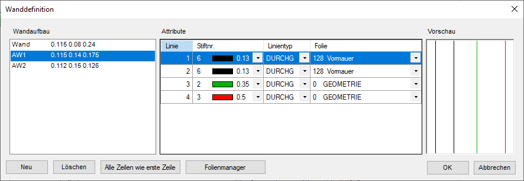
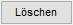
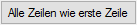
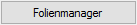

")
")
Auswahl/Konfiguration eines Wandaufbaus. Öffnet den Dialog Wanddefinition.
 |
Wandaufbau
Liste der verfügbaren Wandaufbauten mit Wandbezeichnung und Angabe der Schichtdicken.
(Beispiel: AW1 0.115 0.14 0.175 für eine zweischalige Außenwand mit entsprechenden Wandschichten).
Attribute
Darstellung der Linien für den in der Wandaufbau-Liste gewählten Wandaufbau.
Linie
Je nach Anzahl der Schichten, werden entsprechend viele Zeilen angezeigt.
StiftNr.
Aus der Liste können Sie die gewünschte Stiftnummer auswählen.
Linientyp
Für jede Linie wird der entsprechende Linientyp gewählt.
Folie
Sie können jede Linie in eine gesonderte Folie zeichnen. Dazu wählen Sie aus der Ausklappliste die gewünschte Folie aus. Diese muss vorhanden sein und darf nicht ausgeblendet sein. Ist die Zielfolie nicht vorhanden, erscheint ein Hinweis. Sie können diese mit dem Folienmanager erzeugen.
Vorschau
Die Vorschau zeigt Ihnen direkt, wie der Wandaufbau in der Zeichnung aussehen wird.

Anlegen eines neuen Wandaufbaus.

Löscht den markierten Wandaufbau.

Setzt alle Attribute des gewählten Wandaufbaus so, wie für Linie 1 definiert.

Anlegen und Verwalten von Folien. Öffnet den Dialog Folienmanager.
Siehe auch die Optionen [FolAkz] und [Follgn] im Funktionsbereich. » Optionen

Schließt den Dialog. Übernimmt alle Änderungen und wählt den in der Wandaufbau-Liste markierten Eintrag zum Zeichnen aus.

Alle Änderungen werden verworfen und der Dialog geschlossen.
Zugehörige Referenzen: